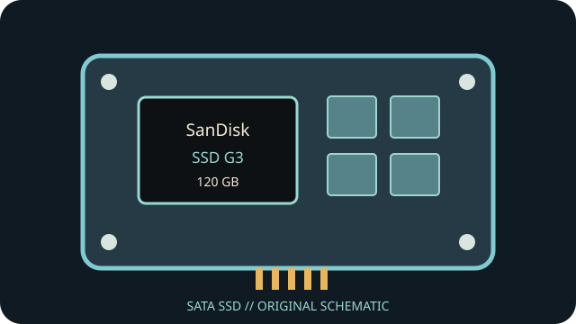

[ INDIVIDUAL COMPONENT // SATA SSD ]
SanDisk SSD G3 120 GB
Capacity- and part-specific archival record. Performance and construction notes are tied to the cited model documentation; do not generalize them across revisions.

IDENTIFICATION: Match exact part number SDSSDP-120G, capacity and revision to the physical label. OEM and regional suffixes can differ.
Specifications
| Manufacturer / model / SKU | SanDisk SSD G3 — SDSSDP-120G |
|---|---|
| Capacity | 120 GB |
| Generation | 2010 client SATA SSD generation |
| Form factor | 2.5-inch, 9.5 mm |
| SATA generation / interface | SATA 3 Gb/s (SATA II) |
| Controller / NAND / performance / endurance | Manufacturer G3 literature identifies MLC NAND and up to 220 MB/s read and 120 MB/s write for the 120 GB class. The controller and rated write endurance are not stated here because of revision-level uncertainty and incomplete surviving manufacturer data. |
| TRIM / firmware | TRIM depends on firmware and a compatible OS/driver/controller path. SanDisk G3 firmware/support archives may be discontinued; preserve current firmware and SMART data before attempting maintenance. |
| Host compatibility | 2.5-inch SATA data/power; SATA 3 Gb/s host link with standard negotiation. Validate BIOS boot support and the full label/model; OEM and retail versions may differ. Some USB adapters do not pass SMART/TRIM or firmware commands. |
Age-related handling & preservation
- Before use, record the label, serial, firmware, SMART health attributes, host/controller and a read-only data/health snapshot; keep verified backups.
- Peak transfer rates and historical endurance ratings do not guarantee remaining life, powered-off retention or recovery after controller failure. Inspect for corrosion, damaged connectors and prior repair.
- Firmware utilities, manuals, warranty coverage and host drivers may be discontinued. Do not update, secure-erase or cross-flash until the full part number/revision and a verified backup are established.
- Check OS TRIM/SMART support directly; bridge, RAID, driver and BIOS behavior can block or alter these features.
Manufacturer / manual sources
- SanDisk — SSD product supportManufacturer SSD product support page; verify the complete G3 model identifier on the physical label.
- SanDisk Forums — G3 SSD product information and resourcesSanDisk-hosted product information/resource thread for the legacy G3 SSD line.
Sources are HTTPS manufacturer product/support pages or product manuals. Match the complete drive label and document revision before applying family-level information to an individual unit.